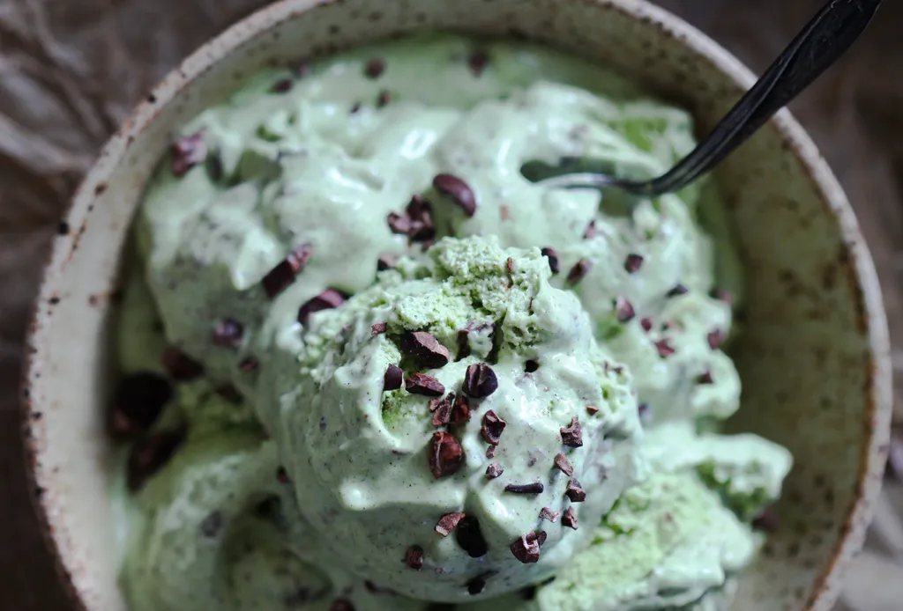

Porque Chocomenta?
Origem, sabor e constraste
Chocomenta é uma combinação que une o sabor intenso e doce do chocolate com o frescor da menta. Esse contraste torna o sabor marcante e faz com que ele divida opiniões entre as pessoas. A combinação está presente em sorvetes, chocolates, milkshakes e diversas sobremesas. Além do sabor, o chocomenta também possui uma estética característica, marcada principalmente pelas cores verde e marrom, folhas de menta e texturas de chocolate. No geral, representa uma mistura entre intensidade, doçura e frescor.
